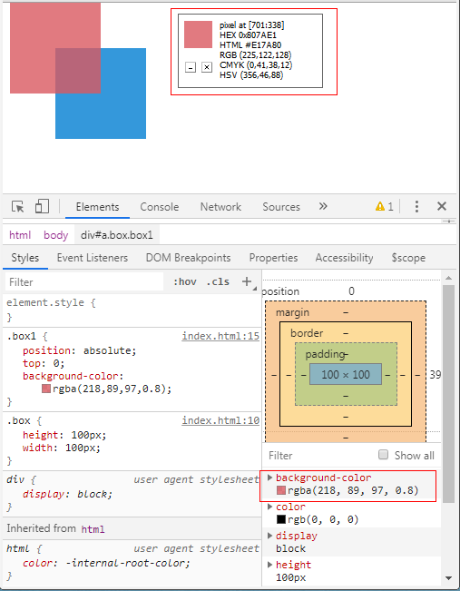

原文连接:https://www.cnblogs.com/dashnowords/p/11741892.html
示例代码托管在：http://www.github.com/dashnowords/blogs
博客园地址：《大史住在大前端》原创博文目录
华为云社区地址：【你要的前端打怪升级指南】

关于opacity和transform的动画性能的话题，机会总是会涉及到“合成层”或者“硬件加速”的概念，理解起来让人觉得非常混乱，最近研究渲染相关的知识后，希望将这几个概念逐步梳理清楚。
一. opacity动画为什么性能好
opacity单词意思为透明度，直观视觉效果就是颜色变淡了，但最终显示的颜色其实仍然可以用RGB三个通道来表示，从数值运算的角度来看，它实际上表示了它采用一般混合策略和其他颜色进行混合时的比例，也就是：
例如在网页默认的白底色上rgba(255,255,255)显示一个包含透明度的rgba(218,89,97,0.8)颜色， 那么颜色的RGB分量都按照上述公式进行计算就得到rgb(225,122,128),用取色器拾取一下渲染出来的点，结果和上述理论是一致的：

所以opacity这个属性本身就是用在重叠部分颜色处理的过程中使用的，对于分层的图原来说就可以看作是与图层内容无关的系数，因为合成过程中当前层中所有像素都需要经历上面的颜色混合公式，所以opacity的动画过程既不会影响布局，也不需要重绘。这样图层中保存的RGB像素数据的缓存在动画过程中也就不需要更新了，如果不使用opacity属性的话，每一帧对于变化部分都需要手动重计算RGB颜色值（这也就相当于是重绘了），因为这些区域的像素颜色一直都在变化，缓存也就没有意义。现在再来看看opacity的性能优势，就相对容易理解了。
二. transform动画为什么性能好
transform的性能优势和opacity的原因是一致的，而不是因为有“硬件加速”的加持。transform属性支持的位移函数translate( )，缩放比例函数scale( )，斜切函数skew( )和旋转函数rotate( )都可以转换为线性映射的形式，也就是matrix( )表示的方式，简单来说就是所有transform实现的效果都可以对原坐标系中的点[x,y]按照如下的齐次矩阵进行计算得到变换后的点坐标[x',y']：
齐次矩阵的系数是设定transform变换时传入的，是一个已知项，而使用三维的齐次矩阵是因为二维坐标的点在变换时会产生常数项（主要是平移变换），而如果以二维矩阵作为参数来计算时，以x坐标变换为例，结果的形式就是x'=ax+by，其中是没有常量的，所以只能采用一个三维齐次矩阵来表示，但计算中的第三个坐标实际上并不需要使用。更多的关于变换的数学原理，感兴趣的读者可以自行查阅资料。
所以transform在动画过程中也不需要改变缓存的记录，而在图层合成时遍历当前层的点然后用上述公式来计算出对应的新坐标点就可以了，它也可以视作一种与图层内容无关的变换，图层中的元素首次生成的位图信息缓存可以被反复使用。比如一段平移动画，如果使用绝对定位+改变left值的方式来实现，就需要不断计算动画元素的布局并更新它的像素信息，但如果使用translate来实现，动画元素在文档流中的位置并不需要改变，无论后续平移到多远，都可以使用位图缓存中保存的初始位置信息，再加上变换矩阵的影响在层合并时计算出来，同样既不影响布局，也不需要重绘，这就是它高性能的原因。
三.小结
opacity和transform动画的高性能是由于其数学原理决定了可以使用缓存信息，而并不是因为它被硬件加速了。